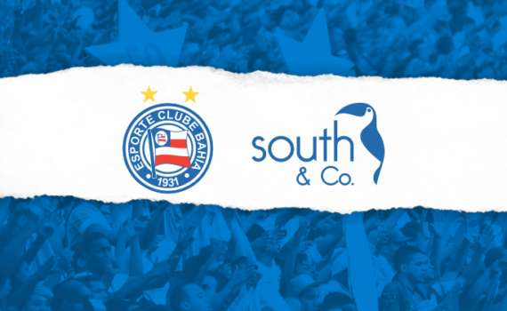
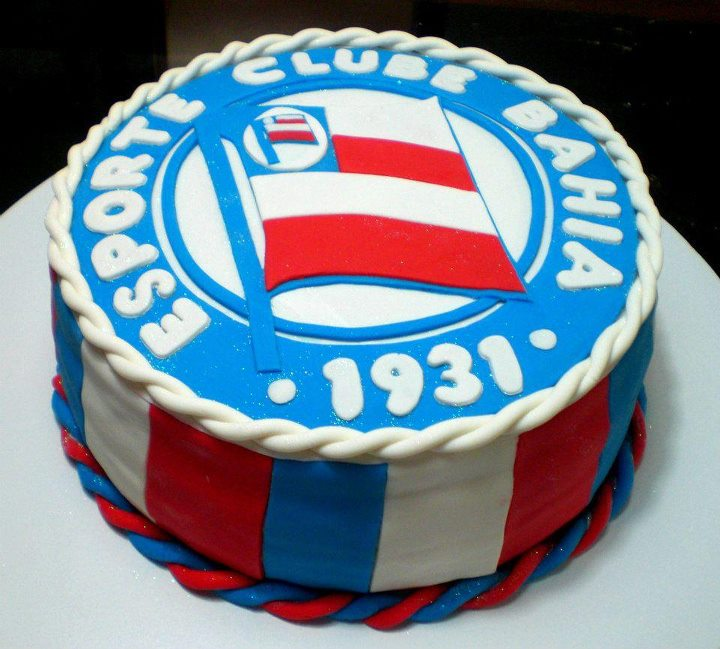
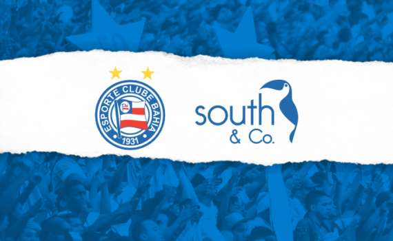
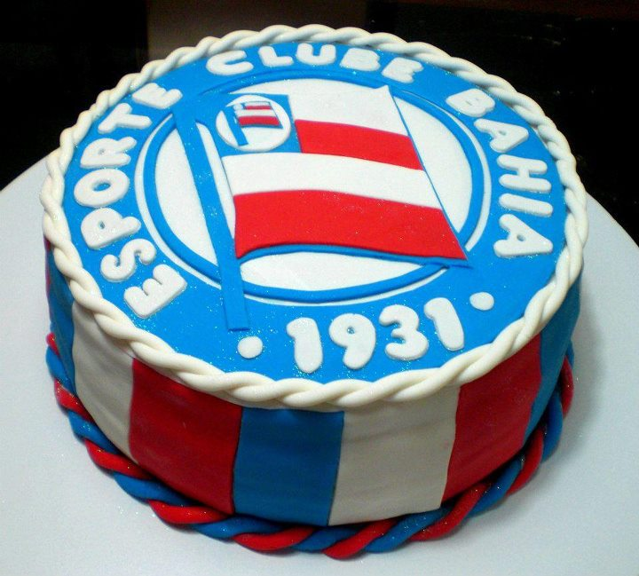

Bahia História
Conhecido como simplesmente Bahia e pelo acrônimo ECB, foi fundado em 1º de janeiro de 1931 por ex-jogadores do Clube Bahiano de Tênis e a Associação Atlética da Bahia, agremiações que tinham encerrado suas atividades futebolísticas no final da década de 1920. Foi cofundador do Clube dos 13 em 1987, que reunia as treze agremiações mais importantes do futebol brasileiro e que representavam 95% dos torcedores brasileiros na época. Com pouco mais de 80 anos de existência, o Tricolor da Boa Terra tornou-se um dos clubes mais populares do estado e do Norte-Nordeste e do país, detendo a maior torcida dentre os clubes da sua região. De acordo com a empresa BDO RCS Auditores Independentes, a marca do clube é a décima quinta de maior valor no Brasil, ultrapassando os 55 milhões de reais, figurando como a maior do Nordeste. Em um novo levantamento feito em 2013, a marca do Bahia persistiu sendo a mais valiosa, estando, dessa vez, na casa dos 66 milhões. Foi o primeiro clube a conquistar o Campeonato Brasileiro de Futebol, em 1959, contra o Santos. O clube também foi o primeiro representante brasileiro a participar de uma edição da Libertadores, em 1960.[nota 1] Em 1988, o tricolor baiano conquistou seu segundo título brasileiro, desta vez derrotando o Internacional. Com tais títulos, o Bahia é o único clube fora do eixo Sul-Sudeste a deter dois títulos nacionais da principal divisão do futebol brasileiro. O clube ainda foi vice-campeão brasileiro duas vezes, em 1961 e 1963. Na sua participação na Libertadores de 1989 o Bahia alcançou as quartas de final, feito que nenhum outro clube do Norte-Nordeste-Centro-Oeste alcançou até então. O clube também soma três títulos na Copas do Nordeste e 48 no Campeonato Baiano de Futebol, sendo o segundo maior campeão estadual do Brasil, perdendo apenas para o ABC de Natal o qual soma 55 títulos. O Bahia por muito tempo conquistou a hegemonia do campeonato estadual, ao ponto de ter sido heptacampeão, de 1973 a 1979. Mas, apesar do currículo vitorioso, o Bahia amargou durante a década de 2000 um dos piores períodos de história. Além de conquistar somente um título estadual (em 2001), foi rebaixado para a Série B do Campeonato Brasileiro em 2003 e para Série C em 2005. O clube retornou para a segunda divisão nacional em 2008 e a principal divisão em 2011,[8] mas após 4 anos disputando a Série A, o clube voltou para segunda divisão em 2014, e retornou em 2016..
Imagens
 


